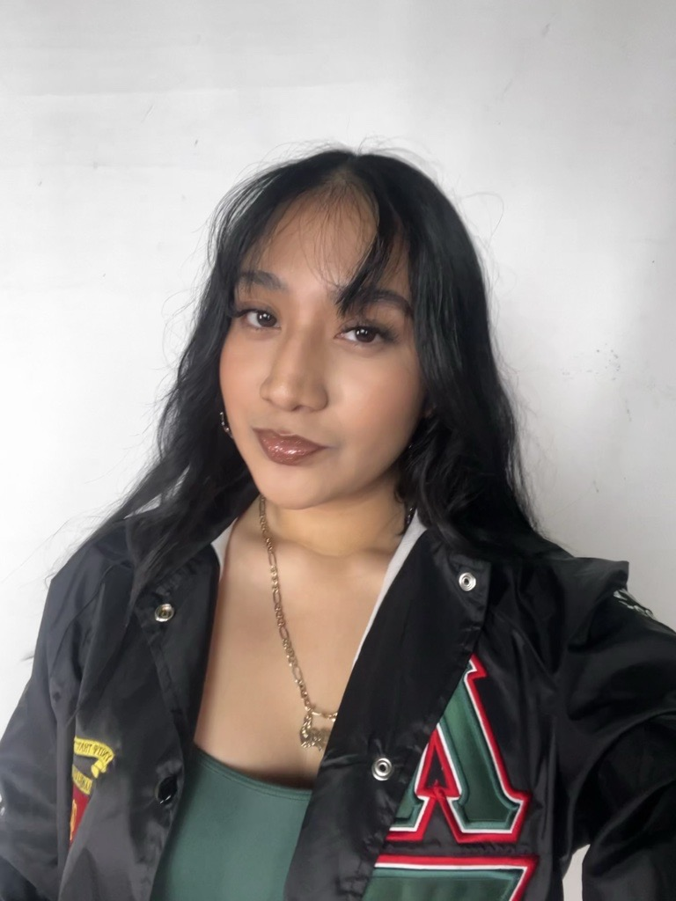

<!DOCTYPE html> 
<html lang="en"></html>
<head>
    <meta charset="UTF-8" />
    <meta name="viewport" content="width=device-width, initial-scale=1.0" />
    <title>Laura Lopez Resume</title>
    <link rel="stylesheet" href="styles.css">
  </head>
<body>
    <div class="top-section">
    <div class="intro-text">
        <h1>Laura Lopez</h1>
        <p>EMAIL: Lauralop@uoregon.edu</p>
        <a href=https://www.linkedin.com/in/laura-lopez-739a5435a?utm_source=share_via&utm_content=profile&utm_medium=member_ios>Linked In</a>
        <a href="https://sites.google.com/view/lauralopezportfolio2024/main-menu">Personal Art website</a>
        <p>LOCATION: Eugene, Oregon</p>
        <p>University of Oregon • Architecture & CS</p>
        <p>Eugene, OR</p>
    </div>

    
</div>
    
    <hr>
    <section>
        <div class="box-header">Personal Information</div>
            <p>I am a currrent 3rd year Architecture major at the University of Oregon.
                I am also a member of Lambda Sigma Gamma Sorority inc.<p>
    </section>
    <section>
        <div class="box-header">Experience</div>
        <h2>Education</h2>
        <ul>
        <li> Universtiy of Oregon Bachelors of Architecture - 2023-current</li>
        <li> Oregon City Junior High School                        - 2019-2023</li>
        </ul>
    </section>
     <section>
        <div class="box-header">Skills</div>
        <h2>Techincal Skills</h2>
            <ul>
                <li> Adobe Cloud services</li>
                <li> Rhino 3d</li>
                <li> Autocad</li>
                <li> Microsoft Office</li>
            </ul>
            <hr>
        <h3>Soft Skills</h3>
            <ul>
                <li> Leadership</li>
                <li>Fast learner</li>
                <li> Communication</li>
                <li> Time management</li>
            </ul>
    </section>
    <footer>
        <p>Laura Lopez, University of Oregon 2026</p>
    </footer>